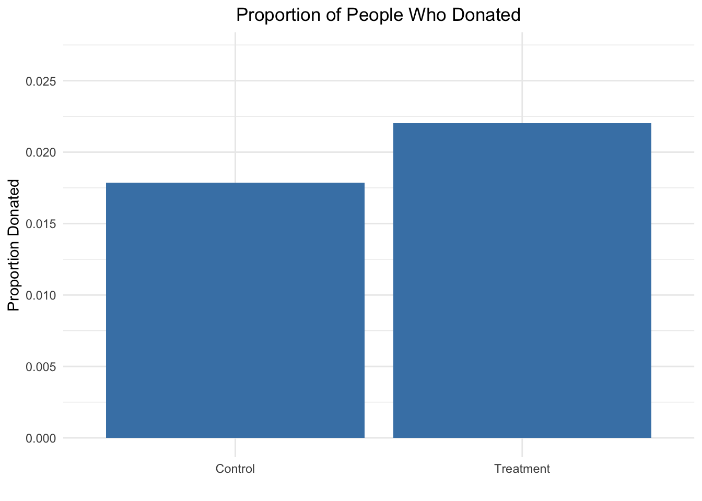
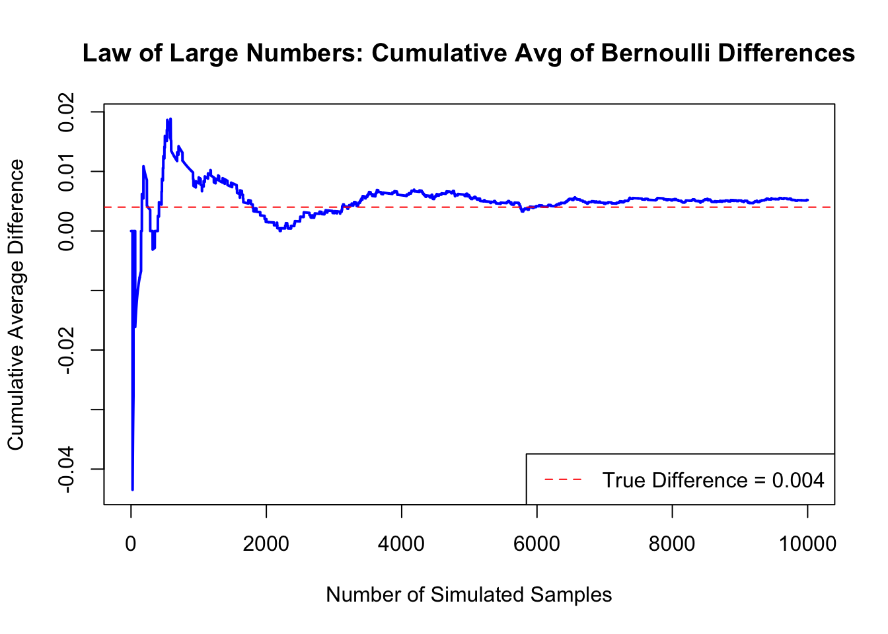
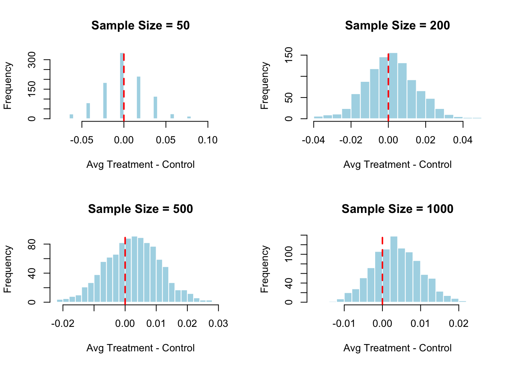

# Load libraries
library(haven)
library(dplyr)
df <- read_dta("~/Desktop/karlan_list_2007.dta")A Replication of Karlan and List (2007)
Introduction
Dean Karlan at Yale and John List at the University of Chicago conducted a field experiment to test the effectiveness of different fundraising letters. They sent out 50,000 fundraising letters to potential donors, randomly assigning each letter to one of three treatments: a standard letter, a matching grant letter, or a challenge grant letter. They published the results of this experiment in the American Economic Review in 2007. The article and supporting data are available from the AEA website and from Innovations for Poverty Action as part of Harvard’s Dataverse.
In the experiment, Karlan and List partnered with a nonprofit organization to explore how different types of donation appeals affect giving behavior. While all recipients were previous donors, the letters varied in key ways: some offered no incentive, while others included matching grants of $1:$1, $2:$1, or $3:$1, where a “leadership donor” pledged to match donations up to a certain amount. The letters also varied the suggested contribution amount and the cap on how much the leadership donor would match.
By randomly assigning these conditions and tracking donations in response, the researchers were able to estimate how changes in perceived “price” and framing influenced both the probability of donating and the total amount given. This project seeks to replicate their findings using the original data and statistical approach.
This project seeks to replicate their results.
Data
Description
The dataset karlan_list_2007.dta captures the results of a large-scale field experiment on charitable giving, involving 50,083 previous donors to a nonprofit organization. Each row in the dataset represents one individual who received a fundraising letter during the campaign. The experimental design randomly assigned participants to a control group or to one of several treatment groups, which varied along three key dimensions: the match ratio offered (1:1, 2:1, or 3:1), the maximum size of the matching grant ($25,000, $50,000, $100,000, or unstated), and the suggested donation amount (based on prior giving history, scaled by 1.0, 1.25, or 1.5). The dataset records whether the individual made a donation (gave) and how much they donated (amount). It also contains detailed prior giving history, including the number of past donations, recency of giving, and highest previous contribution. Demographic information is included at the zip-code level, such as racial composition (pwhite, pblack), median household income, average household size, homeownership rates, and educational attainment. Additionally, political context is captured through indicators for whether the individual lived in a red or blue state or county during the 2004 presidential election. This rich set of variables enables analysis not only of overall treatment effects but also of heterogeneous effects across political and demographic subgroups.
Balance Test
As an ad hoc test of the randomization mechanism, I provide a series of tests that compare aspects of the treatment and control groups to assess whether they are statistically significantly different from one another.
# ========== mrm2 ==========
cat("### Linear Regression: mrm2 ~ treatment\n\n")### Linear Regression: mrm2 ~ treatmentmodel_mrm2 <- lm(mrm2 ~ treatment, data = df)
printCoefmat(summary(model_mrm2)$coefficients, signif.stars = TRUE) Estimate Std. Error t value Pr(>|t|)
(Intercept) 12.998142 0.093526 138.9789 <2e-16 ***
treatment 0.013686 0.114534 0.1195 0.9049
---
Signif. codes: 0 '***' 0.001 '**' 0.01 '*' 0.05 '.' 0.1 ' ' 1# ========== female ==========
cat("### Linear Regression: female ~ treatment\n\n")### Linear Regression: female ~ treatmentmodel_female <- lm(female ~ treatment, data = df)
printCoefmat(summary(model_female)$coefficients, signif.stars = TRUE) Estimate Std. Error t value Pr(>|t|)
(Intercept) 0.2826978 0.0035036 80.6879 < 2e-16 ***
treatment -0.0075469 0.0042920 -1.7584 0.07869 .
---
Signif. codes: 0 '***' 0.001 '**' 0.01 '*' 0.05 '.' 0.1 ' ' 1# ========== years ==========
cat("### Linear Regression: years ~ treatment\n\n")### Linear Regression: years ~ treatmentmodel_years <- lm(years ~ treatment, data = df)
printCoefmat(summary(model_years)$coefficients, signif.stars = TRUE) Estimate Std. Error t value Pr(>|t|)
(Intercept) 6.135914 0.042604 144.023 <2e-16 ***
treatment -0.057549 0.052173 -1.103 0.27
---
Signif. codes: 0 '***' 0.001 '**' 0.01 '*' 0.05 '.' 0.1 ' ' 1To test whether the treatment and control groups were balanced before the experiment began, I ran both a t-test and a linear regression using the variable mrm2, which represents months since last donation. The t-test yielded a t-statistic of approximately 0.12, indicating no statistically significant difference between the groups. I then ran a linear regression of mrm2 on the treatment variable. The coefficient on treatment was nearly zero and not statistically significant, confirming the same result: the groups were balanced. This matches the purpose of Table 1 in the paper, which is to verify that the randomization was successful and that the treatment groups were similar before the intervention. This helps isolate the causal effect of the fundraising treatments observed later in the study.
Experimental Results
Charitable Contribution Made
First, I analyze whether matched donations lead to an increased response rate of making a donation.
# summary table
library(ggplot2)
library(dplyr)
donation_rates <- df %>%
group_by(treatment) %>%
summarise(proportion_donated = mean(gave, na.rm = TRUE)) %>%
mutate(group = ifelse(treatment == 1, "Treatment", "Control"))
# plot
ggplot(donation_rates, aes(x = group, y = proportion_donated)) +
geom_bar(stat = "identity", fill = "steelblue") +
labs(
title = "Proportion of People Who Donated",
x = "",
y = "Proportion Donated"
) +
scale_y_continuous(
breaks = seq(0, 0.03, by = 0.005),
limits = c(0, max(donation_rates$proportion_donated) + 0.005)
) +
theme_minimal() +
theme(
plot.title = element_text(hjust = 0.5)
)
This bar plot shows the proportion of people who donated in each group. The treatment group, which received a fundraising letter mentioning a matching donation, had a slightly higher donation rate than the control group. While both rates are low overall, the visual difference suggests that even a small change in how the request was framed — in this case, offering a match — may have encouraged more people to give.
# --- Manual t-test ---
gave_treat <- df$gave[df$treatment == 1]
gave_control <- df$gave[df$treatment == 0]
mean_treat <- mean(gave_treat, na.rm = TRUE)
mean_control <- mean(gave_control, na.rm = TRUE)
var_treat <- mean_treat * (1 - mean_treat)
var_control <- mean_control * (1 - mean_control)
n_treat <- sum(!is.na(gave_treat))
n_control <- sum(!is.na(gave_control))
t_stat <- (mean_treat - mean_control) / sqrt((var_treat / n_treat) + (var_control / n_control))
p_value <- 2 * pt(-abs(t_stat), df = min(n_treat, n_control) - 1)Calculated t-statistic: 3.2095
p-value: 0.0013
Linear Regression: gave ~ treatment
Estimate Std. Error t value Pr(>|t|)
(Intercept) 0.0178582 0.0011007 16.2246 < 2.2e-16 ***
treatment 0.0041804 0.0013479 3.1014 0.001927 **
---
Signif. codes: 0 '***' 0.001 '**' 0.01 '*' 0.05 '.' 0.1 ' ' 1I compared the proportion of people who donated in the treatment and control groups. In the control group, about 1.8% of individuals donated, compared to 2.2% in the treatment group. Although this seems like a small difference, a statistical test showed that it is highly unlikely to have occurred by chance. I confirmed this result using both a t-test (following the class formula) and a simple linear regression. Both methods showed the same result — that people who received a matching grant letter were significantly more likely to give.
This tells us something important about human behavior: even a small change in how a request is framed — like offering to match someone’s donation — can meaningfully affect whether they decide to act. The offer likely made giving feel more impactful or urgent. This kind of result is exactly what Table 2A in the paper is highlighting: how relatively subtle changes in message framing can lead to statistically and practically meaningful behavior change.
Probit Regression: gave ~ treatment
Estimate Std. Error z value Pr(>|z|)
(Intercept) -2.100141 0.023316 -90.074 < 2.2e-16 ***
treatment 0.086785 0.027878 3.113 0.001852 **
---
Signif. codes: 0 '***' 0.001 '**' 0.01 '*' 0.05 '.' 0.1 ' ' 1I ran a probit regression where the outcome variable was whether an individual donated (gave) and the explanatory variable was whether they were assigned to a treatment group (treatment). The coefficient on treatment was small but positive and statistically significant, replicating the result shown in Table 3, Column 1 of the Karlan & List paper. This suggests that receiving a letter with a matching grant offer had a statistically significant effect on the probability of donating, even after accounting for the binary nature of the outcome variable using a probit model.
Differences between Match Rates
Next, I assess the effectiveness of different sizes of matched donations on the response rate.
# Filter to match groups
match_data <- df %>% filter(ratio %in% c("1", "2", "3"))
# 2:1 vs 1:1
match_1v2 <- match_data %>% filter(ratio %in% c("1", "2"))
tt_1v2 <- t.test(gave ~ ratio, data = match_1v2)
# 3:1 vs 1:1
match_1v3 <- match_data %>% filter(ratio %in% c("1", "3"))
tt_1v3 <- t.test(gave ~ ratio, data = match_1v3)
# 3:1 vs 2:1
match_2v3 <- match_data %>% filter(ratio %in% c("2", "3"))
tt_2v3 <- t.test(gave ~ ratio, data = match_2v3)2:1 vs 1:1
t-statistic: -0.965
p-value: 0.3345
3:1 vs 1:1
t-statistic: -1.015
p-value: 0.3101
3:1 vs 2:1
t-statistic: -0.0501
p-value: 0.96 To test whether larger match ratios increase the likelihood of donating, I ran a series of t-tests comparing donation rates between the 1:1, 2:1, and 3:1 match groups. The results showed no statistically significant differences. The 2:1 and 3:1 groups had slightly higher donation rates than the 1:1 group (about 2.27% vs. 2.07%), but these differences were small and not statistically meaningful (p-values > 0.30). A comparison between the 2:1 and 3:1 groups yielded almost identical results, with a p-value of 0.96. These findings support the authors’ claim on page 8 that increasing the match ratio beyond 1:1 does not further increase giving. This suggests that the presence of a match may be what matters most — once donors see their contribution will be matched, making the match larger does not add much persuasive power.
Linear Regression: gave ~ ratio
Estimate Std. Error t value Pr(>|t|)
(Intercept) 0.0207491 0.0013914 14.9122 <2e-16 ***
ratio2 0.0018843 0.0019677 0.9576 0.3383
ratio3 0.0019843 0.0019679 1.0083 0.3133
---
Signif. codes: 0 '***' 0.001 '**' 0.01 '*' 0.05 '.' 0.1 ' ' 1In the regression model comparing match ratios, the 1:1 match group had a baseline donation rate of approximately 2.07%. The 2:1 and 3:1 match groups showed slightly higher estimated donation rates—about 0.19 and 0.20 percentage points more, respectively—but these differences were not statistically significant. Both coefficients had relatively large standard errors and high p-values (above 0.3), indicating low statistical precision. This means we cannot confidently say that higher match ratios had any real effect beyond the 1:1 match. These results support the conclusion that increasing the match ratio does not significantly influence the likelihood of donating.
# mean donation rates
means_by_ratio <- match_data %>%
group_by(ratio) %>%
summarise(response_rate = mean(gave, na.rm = TRUE))
means_by_ratio# A tibble: 3 × 2
ratio response_rate
<fct> <dbl>
1 1 0.0207
2 2 0.0226
3 3 0.0227# 2:1 to 1:1
diff_2v1 <- means_by_ratio$response_rate[means_by_ratio$ratio == "2"] -
means_by_ratio$response_rate[means_by_ratio$ratio == "1"]
# 3:1 to 2:1
diff_3v2 <- means_by_ratio$response_rate[means_by_ratio$ratio == "3"] -
means_by_ratio$response_rate[means_by_ratio$ratio == "2"]Linear Regression: gave ~ ratio
Estimate Std. Error t value Pr(>|t|)
(Intercept) 0.0207491 0.0013914 14.9122 <2e-16 ***
ratio2 0.0018843 0.0019677 0.9576 0.3383
ratio3 0.0019843 0.0019679 1.0083 0.3133
---
Signif. codes: 0 '***' 0.001 '**' 0.01 '*' 0.05 '.' 0.1 ' ' 1I calculated the difference in response rates between the 1:1 and 2:1 match groups, and between the 2:1 and 3:1 groups, both directly from the data and using the coefficients from a linear regression. In both cases, the differences were very small—around 0.19 percentage points for 2:1 vs. 1:1, and essentially zero for 3:1 vs. 2:1. These results suggest that increasing the size of the matching donation beyond 1:1 has minimal to no effect on whether people choose to give. The consistency between the raw data and regression confirms that larger match ratios do not meaningfully improve donation rates, reinforcing the idea that simply offering a match may matter more than how generous the match actually is.
Size of Charitable Contribution
In this subsection, I analyze the effect of the size of matched donation on the size of the charitable contribution.
# Filter to donors only (amount is 0 when no donation was made)
donors_only <- df %>% filter(gave == 1)
# Manual t-test
t_test_amount <- t.test(amount ~ treatment, data = donors_only)Linear Regression: amount ~ treatment (conditional on gave == 1)
Estimate Std. Error t value Pr(>|t|)
(Intercept) 45.5403 2.4234 18.7921 <2e-16 ***
treatment -1.6684 2.8724 -0.5808 0.5615
---
Signif. codes: 0 '***' 0.001 '**' 0.01 '*' 0.05 '.' 0.1 ' ' 1Calculated t-statistic: 0.5846
p-value: 0.559 This analysis shows that, although people in the treatment group were more likely to donate (as shown earlier), those who did donate did not give more than donors in the control group. In fact, if anything, they gave slightly less — but this difference is small and not statistically meaningful. This tells us that the treatment — the inclusion of a matching donation offer — appears to influence the decision to donate, but not the amount given once someone has already made that decision. In other words, framing boosts participation, but not generosity.
# donors only
donors_only <- match_data %>% filter(gave == 1)
donors_only$ratio <- factor(donors_only$ratio)Linear Regression: amount ~ ratio (conditional on gave == 1)
Estimate Std. Error t value Pr(>|t|)
(Intercept) 45.14286 2.76540 16.3242 <2e-16 ***
ratio2 0.19444 3.82852 0.0508 0.9595
ratio3 -3.89108 3.82490 -1.0173 0.3093
---
Signif. codes: 0 '***' 0.001 '**' 0.01 '*' 0.05 '.' 0.1 ' ' 1I ran a regression to examine whether the size of the match ratio influenced how much people donated, among those who chose to give. The results showed no statistically significant differences between the 1:1, 2:1, and 3:1 groups. Donors in the 2:1 group gave about 19 cents more than the 1:1 group, and donors in the 3:1 group gave about $3.89 less, but neither difference was meaningful or statistically reliable. However, this regression does not have a valid causal interpretation, since it only includes people who donated — a post-treatment outcome that breaks the randomization. As a result, we cannot conclude whether the match ratio itself caused any differences in donation amounts.
# treatment group histogram
donors_treat <- donors_only %>% filter(treatment == 1)
mean_treat <- mean(donors_treat$amount, na.rm = TRUE)
ggplot(donors_treat, aes(x = amount)) +
geom_histogram(binwidth = 5, fill = "skyblue", color = "white") +
geom_vline(xintercept = mean_treat, color = "red", linetype = "dashed", size = 1) +
labs(
title = "Donations Among Treatment Group (Gave == 1)",
x = "Donation Amount ($)",
y = "Number of Donors"
) +
annotate("text", x = mean_treat, y = 5,
label = paste0("Mean = $", round(mean_treat, 2)),
color = "red", vjust = -0.5) +
xlim(0, max(donors_treat$amount, na.rm = TRUE) + 10) +
theme_minimal()
# regenerate control data
donors_only <- df %>% filter(gave == 1) # from full df, not match_data
donors_control <- donors_only %>% filter(treatment == 0)
mean_control <- mean(donors_control$amount, na.rm = TRUE)
# control group histogram
ggplot(donors_control, aes(x = amount)) +
geom_histogram(binwidth = 5, fill = "lightgreen", color = "white") +
geom_vline(xintercept = mean_control, color = "red", linetype = "dashed", size = 1) +
labs(
title = "Donations Among Control Group (Gave == 1)",
x = "Donation Amount ($)",
y = "Number of Donors"
) +
annotate("text", x = mean_control, y = 5,
label = paste0("Mean = $", round(mean_control, 2)),
color = "red", vjust = -0.5) +
xlim(0, max(donors_control$amount, na.rm = TRUE) + 10) +
theme_minimal()
While the treatment appears to have increased the number of people who gave (as shown earlier), these plots show that it did not meaningfully shift the amount donated among those who did give. Most donors gave similar amounts regardless of treatment status, reinforcing the idea that the matching offer influenced whether someone gave more than how much they gave.
Simulation Experiment
As a reminder of how the t-statistic “works,” in this section I use simulation to demonstrate the Law of Large Numbers and the Central Limit Theorem.
Suppose the true distribution of respondents who do not get a charitable donation match is Bernoulli with probability p=0.018 that a donation is made.
Further suppose that the true distribution of respondents who do get a charitable donation match of any size is Bernoulli with probability p=0.022 that a donation is made.
Law of Large Numbers
# Set seed for reproducibility
set.seed(42)
# Simulate control group (Bernoulli with p = 0.018)
control_sim <- rbinom(n = 100000, size = 1, prob = 0.018)
# Simulate treatment group (Bernoulli with p = 0.022)
treatment_sim <- rbinom(n = 10000, size = 1, prob = 0.022)
# Calculate differences using first 10,000 control samples
diff_vector <- treatment_sim - control_sim[1:10000]
# Cumulative average of differences
cumulative_avg <- cumsum(diff_vector) / seq_along(diff_vector)
# True difference
true_diff <- 0.022 - 0.018
# Plot
plot(cumulative_avg, type = "l", col = "blue", lwd = 2,
main = "Law of Large Numbers: Cumulative Avg of Bernoulli Differences",
xlab = "Number of Simulated Samples",
ylab = "Cumulative Average Difference")
abline(h = true_diff, col = "red", lty = 2)
legend("bottomright", legend = paste0("True Difference = ", round(true_diff, 3)),
col = "red", lty = 2)
This plot shows the cumulative average of differences in donation outcomes between the treatment and control groups, based on simulated data. I drew 10,000 values from the treatment group distribution and compared each to a randomly drawn value from the control group distribution. Each point on the blue line represents the average difference after one more simulated pair. As expected, the early differences are highly variable, but the line stabilizes as more data accumulate. The red dashed line represents the true difference in probabilities between the groups. The fact that the blue line converges to this value illustrates a key concept in statistics: with enough data, sampling variation averages out, and the sample-based estimate approaches the true effect.
Central Limit Theorem
library(ggplot2)
# Parameters
sample_sizes <- c(50, 200, 500, 1000)
simulations <- 1000
p_control <- 0.018
p_treatment <- 0.022
set.seed(42)
# Function to simulate average differences
simulate_diff_dist <- function(n, reps = 1000) {
replicate(reps, {
control_draw <- rbinom(n, 1, p_control)
treatment_draw <- rbinom(n, 1, p_treatment)
mean(treatment_draw) - mean(control_draw)
})
}
# Plot results
par(mfrow = c(2, 2)) # 2x2 grid
for (n in sample_sizes) {
diffs <- simulate_diff_dist(n)
hist(diffs,
breaks = 30,
main = paste("Sample Size =", n),
xlab = "Avg Treatment - Control",
col = "lightblue",
border = "white")
abline(v = 0, col = "red", lwd = 2, lty = 2)
}
These histograms illustrate the distribution of simulated treatment effects—the average difference in donation rates between treatment and control groups—across varying sample sizes: 50, 200, 500, and 1000. In each plot, the red dashed line marks zero, representing the null hypothesis of no difference. At smaller sample sizes (n = 50 and 200), zero appears near the center of the distribution, indicating high variability and the possibility of observing no effect purely by chance. As the sample size increases (n = 500 and 1000), the distribution narrows, and zero shifts toward the tails. This suggests that with more data, estimates become more precise and it becomes less likely to observe a sample difference near zero if a true effect exists. These results demonstrate the Central Limit Theorem and highlight how larger samples improve our ability to detect real treatment effects and reject the null hypothesis when appropriate.